These examples are adapted from the Plotly R documentation, rewritten with
plotly.core’s graph objects: go_figure(),
add_<trace>(), update_layout() and the
go_*() constructors.
Fundamentals
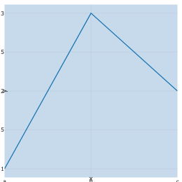
The Figure Data Structure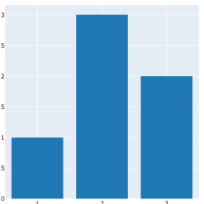
Creating and Updating Figures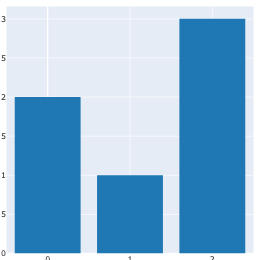
Displaying Figures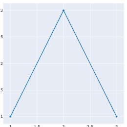
Configuration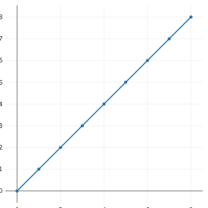
Setting Graph Size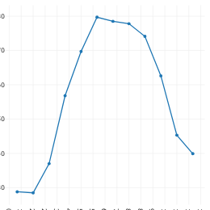
Formatting Ticks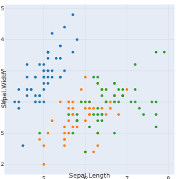
Setting the Font, Title, Legend Entries, and Axis Titles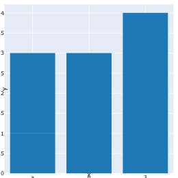
Axes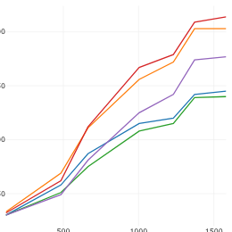
Legends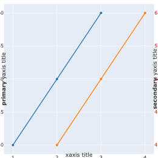
Multiple Axes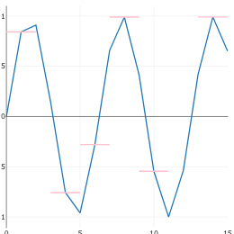
Shapes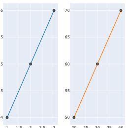
Subplots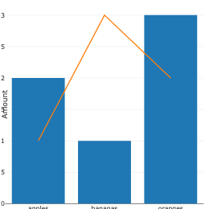
Multiple Chart Types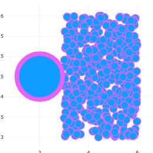
Marker Styling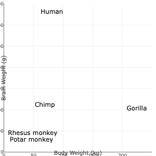
Text and Annotations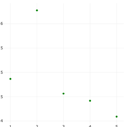
Hover Text and Formatting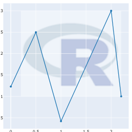
Images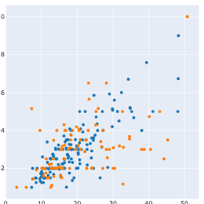
Discrete Colors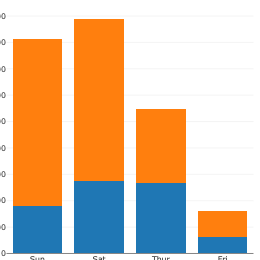
Styling Plotly Figures in R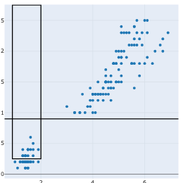
Horizontal and Vertical Lines and Rectangles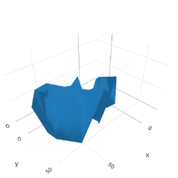
3D Axes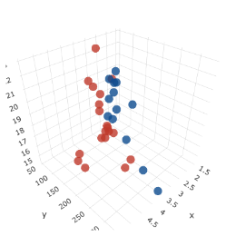
3D Hover Options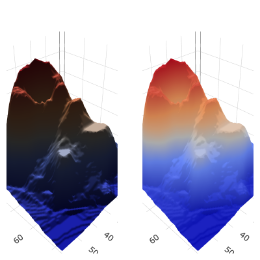
3D Surface Lighting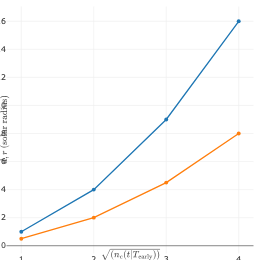
LaTeX Typesetting in R Graphs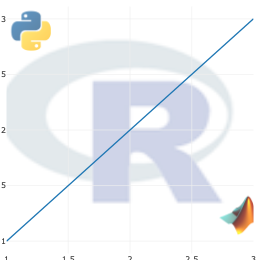
Embedding Logos in Plotly Graphs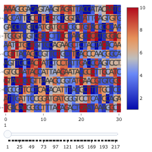
WebGL Text and Annotations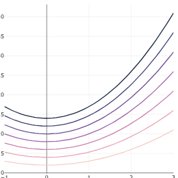
ColorwayTroubleshooting
Basic Charts
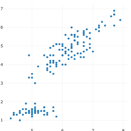
Scatter and Line Plots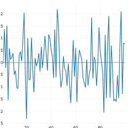
Line Plots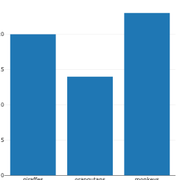
Bar Charts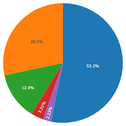
Pie Charts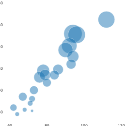
Bubble ChartsWebGL vs SVG in R
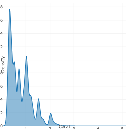
Filled Area Plots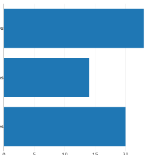
Horizontal Bar Charts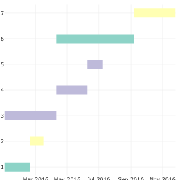
Gantt Charts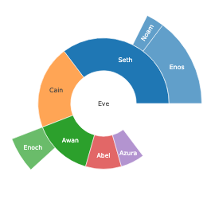
Sunburst Charts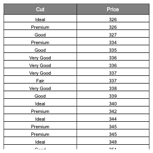
Tables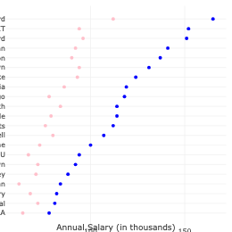
Dot Plots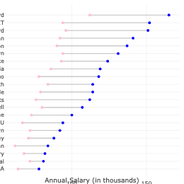
Dumbbell Plots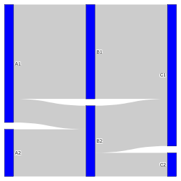
Sankey Diagram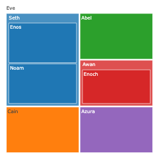
Treemap Charts